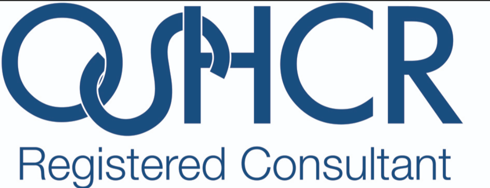
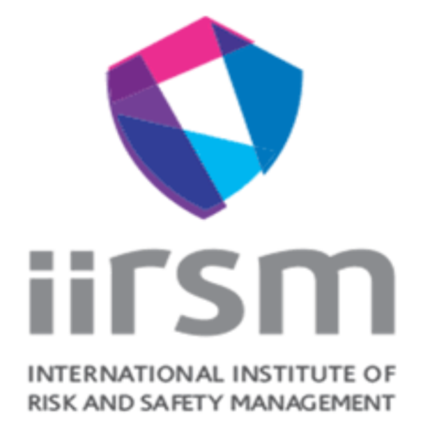
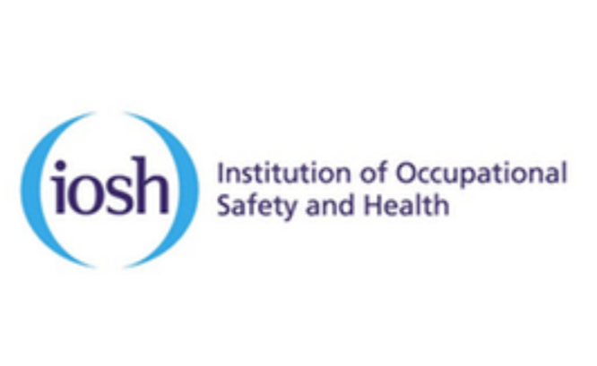
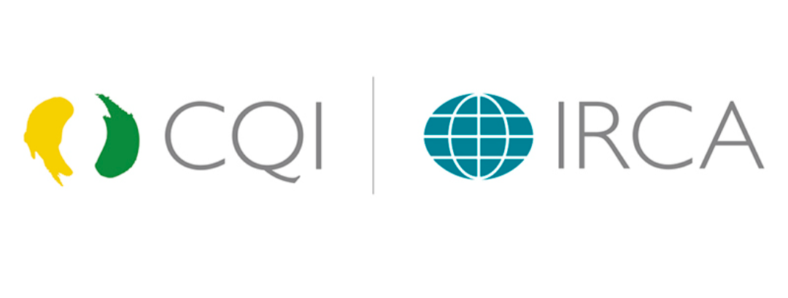
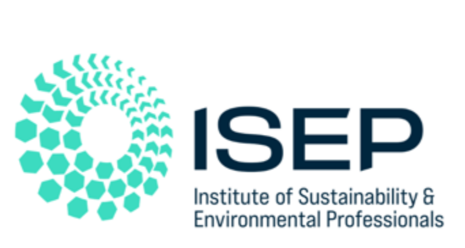

About HESSLE
HESSLE Consultancy provides professional Safety, Health, Environment and Quality support across high‑risk industries such as Construction, Transport including Rail, Utilities including Overhead Powerlines 1-400kv, Arboriculture and other high‑risk operational environments. With frontline experience and SHEQ expertise, we deliver solutions that work in the real world for all sizes of business.
TRAINING & COACHING
We also offer targeted training for managers, supervisors and frontline teams, please enquire or see our other services below.
Services
SHEQ Audits & Inspections
Structured audits, compliance checks and gap analyses aligned with ISO standards and legislation.
Risk Assessment & Controls
Development and review of risk assessments, safe systems of work and other operational controls. (RAMS packages)
Management Systems
Creation, review and improvement of SHEQ policies, procedures and integrated management systems.
★ Retained Competent Person Services (Our Favourite Procured Package)
Executive Summary:
A company can save £45,000–£85,000 per year by retaining HESSLE instead of employing a full‑time Head of SHEQ — and gain higher‑level expertise (FIIRSM, OSHCR, IOSH, CQI/IRCA, IIRSM, ISEP) without the overheads, HR burden or long‑term liabilities.
Retained consultancy fees are fully tax‑deductible business expenses, whereas an employee is a fixed overhead with additional hidden costs.
Act as your business’s 'named' competent person, fulfilling legal duties under Regulation 7 of the Management of Health and Safety at Work Regulations requiring the appointment of someone with the competent skills, knowledge, experience and expertise.
With a simple monthly retainer, you get FIIRSM and OSHCR level compliance, audits, documentation and ongoing expert support and advice — giving you full regulatory assurance.
Incident Investigation Services
Undertake investigations from a lead perspective at short notice for all levels of severity when an incident occurs in the workplace with full stakeholder engagement including RIDDOR reporting etc.
TAQA (Training Assessment Quality Assurance)
We also offer professional TAQA‑aligned training services, helping organisations assess staff competence in real workplace environments using nationally recognised standards. Whether you need workplace assessments, evidence reviews or support with vocational study, we provide clear, structured and compliant assessment that meets modern training and quality assurance requirements to demonstrate staff competency.
Sectors
- All small, medium and large business organisations
- Rail (inc Light Rail Transit)
- Road Transport, Buses & Logistics
- Construction & Infrastructure
Our Accreditations
We are professionally recognised and accredited by leading industry bodies:





Transparent Pricing
Clear, simple and upfront pricing — no hidden fees, no surprises.
Day & Hourly Rates
General Consulting: £500/day
Hourly rate: £70/hr
Specialist & Advanced Risk Consulting (incl. ISO): £700/day
System Automation & Coding: £950/day
SME Monthly Retainers
Small Business: £250/month
(5–20 staff)
Medium Business: £500/month
(20–50 staff)
Large Business: £700/month
(50–200 staff)
Extra Large Business: £1000/month
(200–400 staff)
Fixed Price Packages
RAMS Packs:
Low Risk: £250
Medium Risk: £500
High Risk: £1250
Safety Policy + Arrangements Brief: £750
Full Safety Management System (SMS):
Paper Based: £4000
Digital: £POE
Incident Investigations
£200/hr
Full investigation, stakeholder engagement and RIDDOR reporting included.
Contact
Email: Click here to send us an email.
LinkedIn: Connect with HESSLE